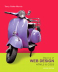
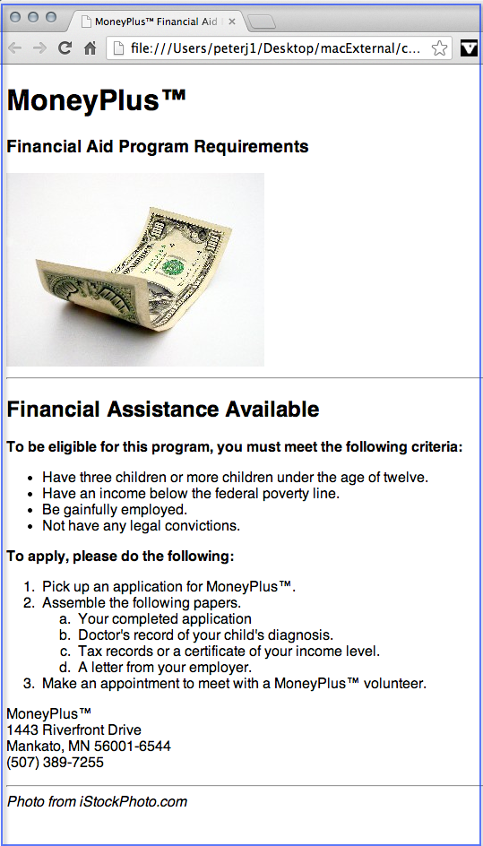
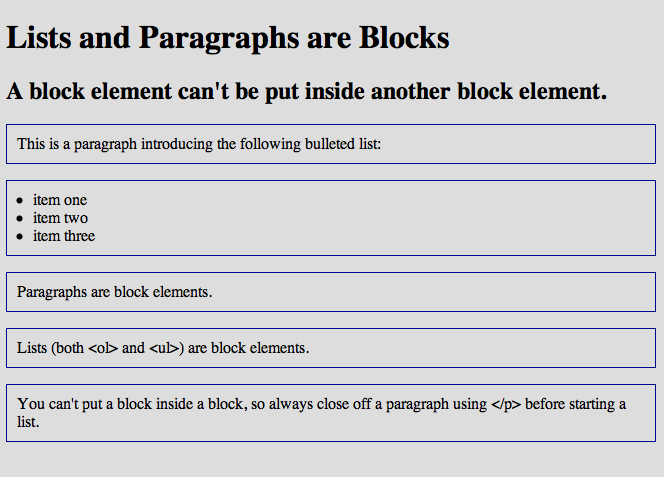
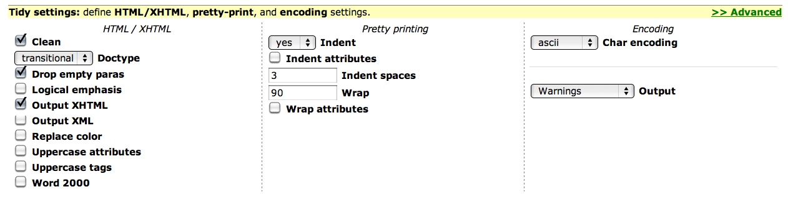

|
Lists |
Making a list, checking it twice... |

In this module you will learn how to:
- Make bulleted lists (like this one)
- Make ordered lists (1, 2, 3 etc)
- Incorporate special characters: < & € ™ © •
- Add horizontal rules to create visual separation on a page.
WII-FM (What's In It - For Me)
Most people aren't aware of the details of web development. They just want to use the Web for information and finding things.
People don't read web pages, they scan them. And people love scanning lists.
All of these things help make your pages more readable which means more communication between your client and their customers.
By making your pages quick and easy to read, people will more interested in your information. That usually translates into more sales which sounds like: ka-ching!
Complete these Learning Activities:
Total estimated time for this module: ??? hours.
Take the Self-Quiz: List. You can take the self-quizzes as many times as you like.
Be smart and take the self-quiz once each day to learn the material.
Estimated Time: 10 minutes (probably a lot less) each time you take a self-quiz.
Take the Self-Quiz: List.

Read pages 32-43 and 208-211 in the Web Design textbook.Estimated Time: 1 hour
Read pages 32-43 and 208-211 in the Web Design textbook.
Work through Tutorial:List. This tutorial covers displaying lists of objects, using a horizontal rule to visually organize text on a web page and several tips and tricks from the industry.
Tip: As you work through this tutorial save your files in the folder: 08list
Estimated Time: 1 hour
Work through Tutorial:List.
Learn by doing: Complete Practice Lab:List.
Click on the image to see a larger view.

- This is NOT the project. Practice labs are designed to help you discover what you don't know so you can learn it.
- Pay particular attention to the list inside of the list.
- If you have any questions or become frustrated doing this lab, please get in touch with your instructor so she or he can help you work through it.
- If you are working as part of a study group this is a great Learning Activity to work through together. What you figure out here will help you individually when it comes time to do the graded project work.
- Professional Tip: Use View/Source to look behind the curtain. How did they get that small image of the page to be a link so that it goes to a full-size image?
Use View/Source to find the answer. Do a search (CTRL f) in the HTML code for: financialPage.gif
Estimated Time: 1 hour
Complete Practice Lab:List..

{kind=link}
Extend the paragraph by moving the </p> element after the list and check the HTML Validator. What happens?
Estimated Time: 30 minutes
What about lists inside of paragraphs? Learn by noodling around using this sample code blockElementDemo.html.
Watch this video The Machine is Us/ing Us. This video explores the changes in the way we find, store, create, critique, and share information.
How will the ideas presented in this video affect the skills YOU will need in order to harness, evaluate, and create information effectively?
Estimated Time: 5 minutes
Watch this video The Machine is Us/ing Us.
Watch this video to learn how to use CodePen. This is a great way to experiment with CSS to see what effect you will get.
Once you have what you want you can copy and paste it into your CSS file.
Estimated Time: 20 minutes
Watch this video to learn how to use CodePen.
This article will show you how to create gradients. The colors in the example are a bit bold, but you can use the same techniques for soft pastel backgrounds that support your text and graphics and make your menus look more interesting.
Subtle is better than SUBtle.
ColorZilla is a great Google Chrome/FireFox extension. You can use it to find out the Hex code of a color. This video shows you all the colorful details of ColorZilla.
You can also use ColorZilla to create gradients. Watch this video to learn how to use this the ColorZilla gradient tool.
You would copy and paste the gradient code into your CSS. For example to set up the background gradient of your page:
body {
background: background: -moz-linear-gradient(top, rgba(72,132,206,0.51) 0%, rgba(222,223,226,0) 100%); /* FF3.6+ */
background: -webkit-gradient(linear, left top, left bottom, color-stop(0%,rgba(72,132,206,0.51)), color-stop(100%,rgba(222,223,226,0)));
/* Chrome,Safari4+ */
background: -webkit-linear-gradient(top, rgba(72,132,206,0.51) 0%,rgba(222,223,226,0) 100%); /* Chrome10+,Safari5.1+ */
background: -o-linear-gradient(top, rgba(72,132,206,0.51) 0%,rgba(222,223,226,0) 100%);
/* Opera 11.10+ */
background: -ms-linear-gradient(top, rgba(72,132,206,0.51) 0%,rgba(222,223,226,0) 100%);
/* IE10+ */
background: linear-gradient(to bottom, rgba(72,132,206,0.51) 0%,rgba(222,223,226,0) 100%);
/* W3C */
filter: progid:DXImageTransform.Microsoft.gradient( startColorstr='#824884ce', endColorstr='#00dedfe2',GradientType=0 ); /* IE6-9 */
}
Estimated Time: 20 minutes
This article will show you how to create gradients
Your Graded Assignments For This Module
 Stop!
Stop!
Don't frustrate yourself. Do the Learning Activities BEFORE starting these graded activities.
Take the Graded Quiz: List
- There will be 10 true/false and multiple choice questions.
- 10 questions - 10 minutes - 10 points
- Feel free to use your book or look stuff up on the Web or try things out on your computer.
- You will have one chance to take the quiz.
- The questions will be from the same database that the self-quiz uses.
- The quiz will be scored automatically and your points shown in your D2L grade book.
Estimated Time: 10 minutes
Look on the Course Map for the due date for this graded activity.
 Work on the Project: ListMenu
Work on the Project: ListMenu
This project covers Lists, Hyperlinks, and Menus.
Get started now, doing as much as you can and then finish up the project as you finish the next module on Hyperlinks and Menus.

Your Tip-Of-The-Week
(Click on the lightbulb to reveal the tip.)
Tidy - Make Your Code Look Good!

They haven't added HTML 5 yet so just use Transitional for the "Doctype" selection.
Click on the image above to see the settings that your instructor suggests.
What's Next?

Hyperlinks make the Web go round. Learn the many different ways you can create use this valuable element.